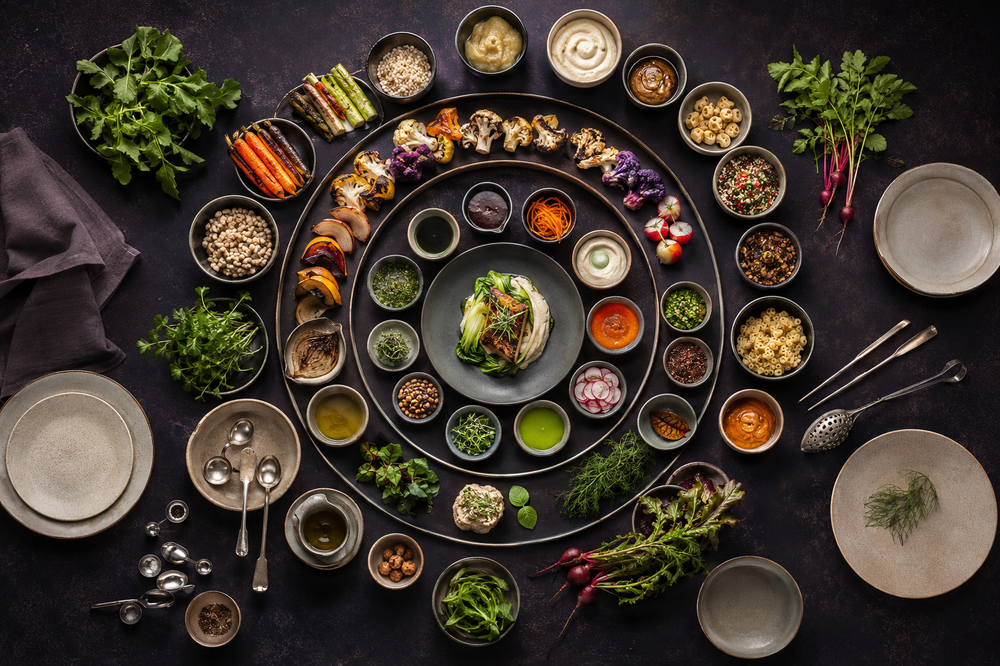
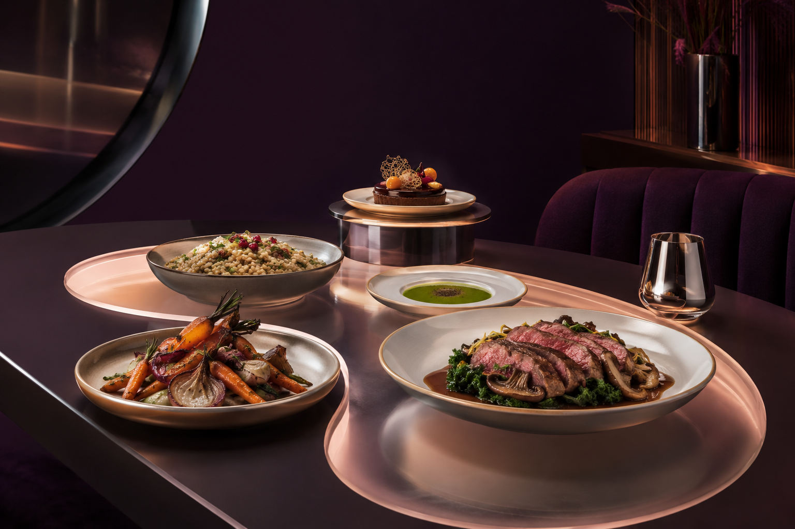

SUPPER METHOD / SIGNAL 01
Compose the evening
from its constraints.
Start with people, time and equipment. Flavour comes alive when the practical sequence can carry it.

THE FIVE-LINE METHOD
One brief before one menu.
- 01
Guest line
Confirm attendance, allergies, dietary needs, accessibility and the mood of the gathering.
- 02
Time line
Mark arrival, first plate, main service and a flexible finish; then work backward.
- 03
Flavour line
Choose a dominant note for each course and add contrast instead of repetition.
- 04
Heat line
Count oven, hob and holding needs. Remove collisions before shopping.
- 05
Host line
Protect time away from the kitchen so the evening remains shared.

SERVICE HANDOFF
Put every last-minute move on one small card.
List what heats, what rests, what dresses and what can wait. If the card becomes crowded, simplify the menu rather than compressing the host.
Open the menu register ↗